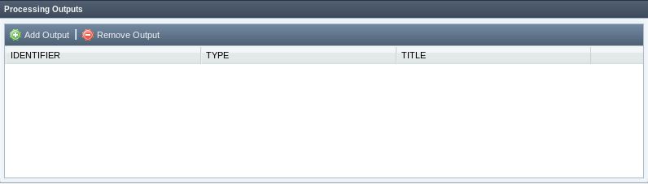
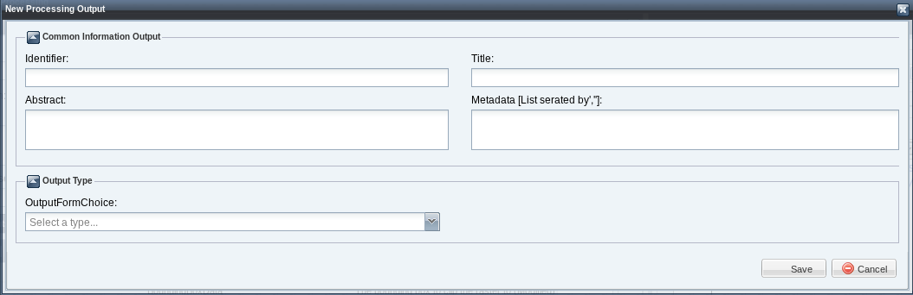
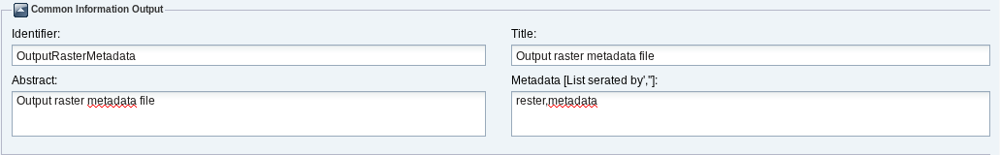
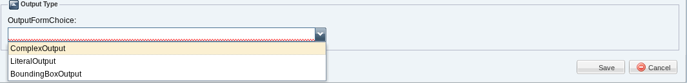
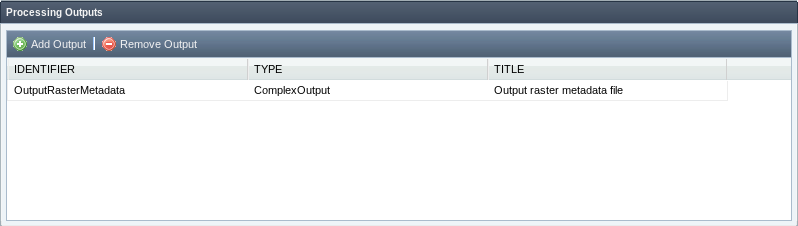
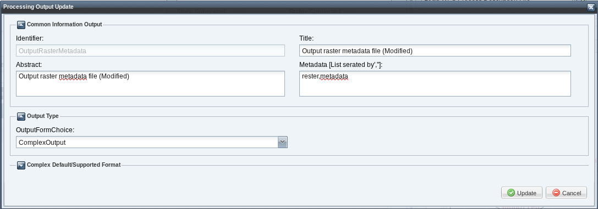
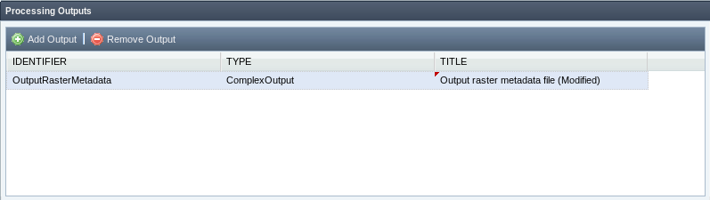
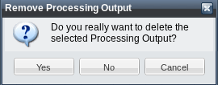

The processing outputs in the wizard are managed by the "Processing Outputs" section. In this section you can add, edit or delete an output processing.

In order to add new processing output click on "Add Output" button, a new window will be displayed:

At the top of the window should be inserted the general information. These are:

The types of outputs that can be defined as follows:

After inserting information about the type of output, click on "Save" button. The output will be added to the "Processing Outputs" grid.

In order to update a processing output select the output in the "Processing Outputs" grid and make double-click. A window with the output information will be displayed:

All the information about the output, except the identifier, may be modified. After changing information about the output click on "Update" button.

In order to remove a processing output select the output in the "Processing Outputs" grid and click on "Remove Output" button. A confirmation message will be displayed:

Click on "Yes" button. The output will be removed and the the "Processing Outputs" grid will be updated.